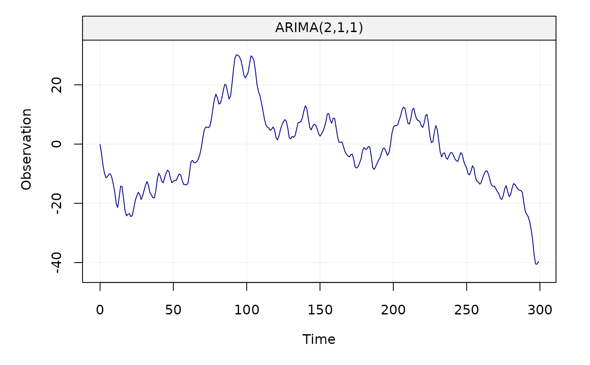
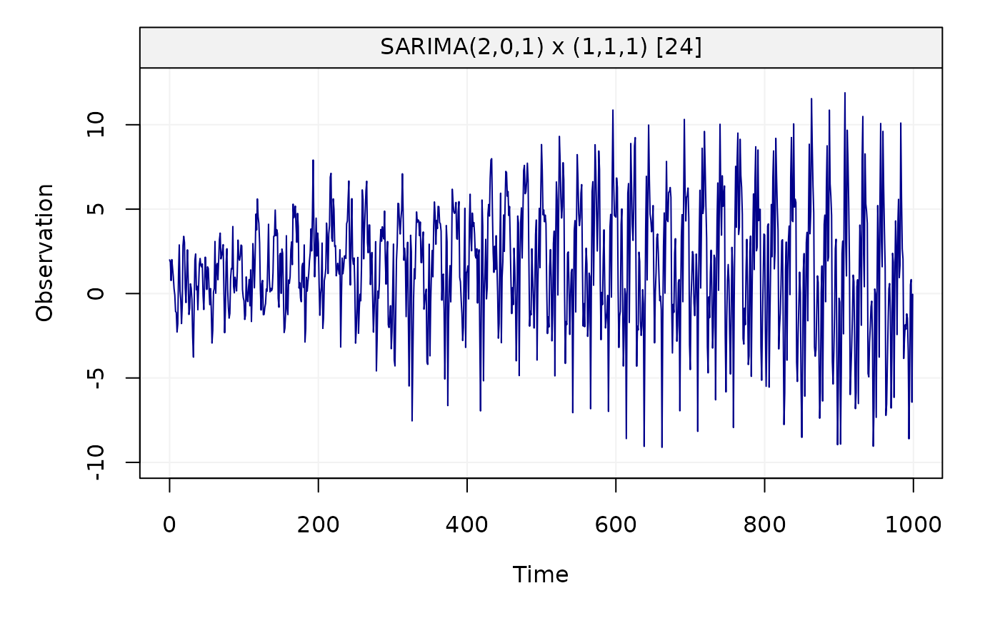

This function can fit a time series model to data using different methods.
estimate(model, Xt, method = "mle", demean = TRUE)A time series model.
A vector of time series data.
A string indicating the method used for model fitting.
Supported methods include mle, yule-walker, gmwm and rgmwm.
A boolean indicating whether the model includes a mean / intercept term or not.
Xt = gen_gts(300, AR(phi = c(0, 0, 0.8), sigma2 = 1))
plot(Xt)
estimate(AR(3), Xt)
#> Fitted model: AR(3)
#>
#> Estimated parameters:
#>
#> Call:
#> arima(x = as.numeric(Xt), order = c(p, intergrated, q), seasonal = list(order = c(P,
#> seasonal_intergrated, Q), period = s), include.mean = demean, method = meth)
#>
#> Coefficients:
#> ar1 ar2 ar3 intercept
#> -0.0274 -0.0272 0.8255 -0.0507
#> s.e. 0.0327 0.0327 0.0326 0.2510
#>
#> sigma^2 estimated as 1.061: log likelihood = -436.26, aic = 882.53
Xt = gen_gts(300, MA(theta = 0.5, sigma2 = 1))
plot(Xt)
estimate(MA(1), Xt, method = "gmwm")
#> Fitted model: MA(1)
#>
#> Estimated parameters:
#> Model Information:
#> Estimates
#> MA 0.6735315
#> SIGMA2 0.9822984
#>
#> * The initial values of the parameters used in the minimization of the GMWM objective function
#> were generated by the program underneath seed: 1337.
#>
Xt = gen_gts(300, ARMA(ar = c(0.8, -0.5), ma = 0.5, sigma2 = 1))
plot(Xt)
estimate(ARMA(2,1), Xt, method = "rgmwm")
#> Fitted model: ARMA(2,1)
#>
#> Estimated parameters:
#> Model Information:
#> Estimates
#> AR 0.7640776
#> AR -0.4382348
#> MA 0.5143711
#> SIGMA2 1.1560304
#>
#> * The initial values of the parameters used in the minimization of the GMWM objective function
#> were generated by the program underneath seed: 1337.
#>
Xt = gen_gts(300, ARIMA(ar = c(0.8, -0.5), i = 1, ma = 0.5, sigma2 = 1))
plot(Xt)

estimate(ARIMA(2,1,1), Xt, method = "mle")
#> Fitted model: ARIMA(2,1,1)
#>
#> Estimated parameters:
#>
#> Call:
#> arima(x = as.numeric(Xt), order = c(p, intergrated, q), seasonal = list(order = c(P,
#> seasonal_intergrated, Q), period = s), include.mean = demean, method = meth)
#>
#> Coefficients:
#> ar1 ar2 ma1
#> 0.8049 -0.4668 0.5264
#> s.e. 0.0649 0.0613 0.0619
#>
#> sigma^2 estimated as 0.9961: log likelihood = -424.71, aic = 857.42
Xt = gen_gts(1000, SARIMA(ar = c(0.5, -0.25), i = 0, ma = 0.5, sar = -0.8,
si = 1, sma = 0.25, s = 24, sigma2 = 1))
plot(Xt)

estimate(SARIMA(ar = 2, i = 0, ma = 1, sar = 1, si = 1, sma = 1, s = 24), Xt,
method = "rgmwm")
#> Fitted model: SARIMA(2,0,1) x (1,1,1) [24]
#>
#> Estimated parameters:
#> Model Information:
#> Estimates
#> AR 0.3723398
#> AR -0.2431420
#> MA 0.5590085
#> SAR -0.7706956
#> SMA 0.1365543
#> SIGMA2 0.7827080
#>
#> * The initial values of the parameters used in the minimization of the GMWM objective function
#> were generated by the program underneath seed: 1337.
#>